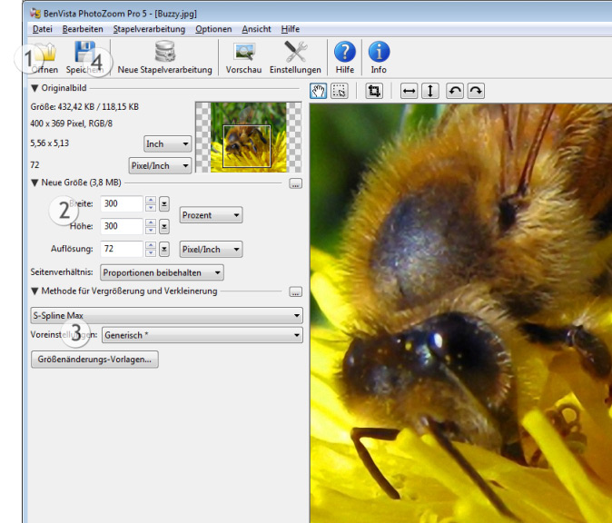

Schnellstart
Eine kurze Einführung, um Ihnen den Start in wenigen einfachen Schritten zu ermöglichen:

Die Zahlen im obigen Bild geben an, wo die einzelnen folgenden Schritte ausgeführt werden sollen.
- Klicken Sie auf Öffnen und wählen Sie ein Bild, dessen Größe Sie verändern möchten
- Tragen Sie die neue Größe ein (in Pixel, Prozent oder Zentimeter/Inch, was auch immer Sie bevorzugen)
- Wählen Sie die Methode zur Größenveränderung aus, die Sie verwenden wollen, oder behalten Sie die Standardeinstellung bei*
- Klicken Sie Speichern, geben Sie einen Dateinamen an und warten Sie, bis die Verarbeitung abgeschlossen ist
Fertig!
* Die Standardeinstellung (S-Spline Max, Voreinstellung: Generisch) wird in den meisten Fällen gute Ergebnisse erzielen, aber die idealen Einstellungen können sich von Bild zu Bild unterscheiden. Wenn Sie die Einstellungen verfeinern oder eine andere größenverändernde Technik (wie z.B. S-Spline XL oder S-Spline) oder Voreinstellung wählen, können Sie die Veränderungen im Vorschaufenster vorher ansehen.
 Falls Sie viele Bilder haben, deren Größe Sie anpassen möchten, können Sie diese alle auf einmal bearbeiten, indem Sie die Stapelverarbeitung verwenden
Falls Sie viele Bilder haben, deren Größe Sie anpassen möchten, können Sie diese alle auf einmal bearbeiten, indem Sie die Stapelverarbeitung verwenden
Für Tipps und Informationen zur Feinabstimmung Ihrer Methode zur Vergrößerung lesen Sie das Kapitel Feinabstimmung